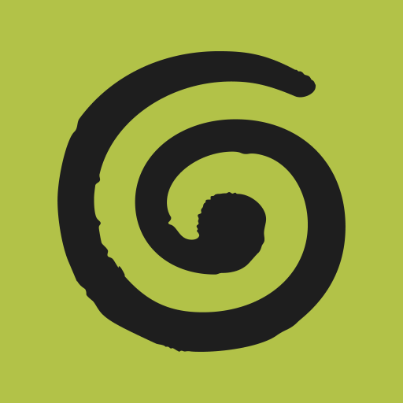

1
Un preneur de notes
toujours présent
Sans ça
« On en a parlé en réunion. »
Et personne ne retrouve la décision.
Le geste
Un preneur de notes IA, annoncé en début de réunion.
Compte rendu dans l'espace commun,
pas dans un dossier perso.


@cafe.ramalogicSylvain Ramaradjou
2
Un seul endroit
où écrire
Sans ça
Le process est dans une tête.
Le devis type, dans un mail de 2024.
Le geste
Un outil, un seul, pour ce qui doit rester : comment on fait, qui fait quoi, ce qu'on a décidé. Même moche.
@cafe.ramalogicSylvain Ramaradjou
3
Un agent IA dans
tes conversations
Sans ça
Tout se décide dans Slack.
Six mois après, personne ne retrouve rien.
Le geste
Un agent IA invité dans le canal : il répond aux questions, et sur un ✅ reporte la décision là où on écrit.

@cafe.ramalogicSylvain Ramaradjou